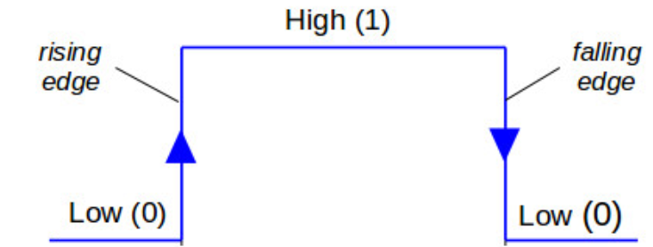

Gamepad Usage¶
Gamepad Layout¶
{kind=link}
{kind=link}
{kind=link}
Boolean Inputs¶
TeleOp OpModes are generally written in iterative style, with a loop that contains code that is called over an over. Under this paradigm, a simple handling of user input could look like
if (gamepad1.a) {
motor.setPower(1);
}
else {
motor.setPower(0);
}
In this situation, this likely does what the driver wants: while the button is held, the motor’s power is set to 1, and otherwise the power is set to 0. Since writing the same power to a motor multiple times has no effect on the motor’s behavior, this works perfectly fine. However, issues arise when wanting to do something once when a button is pressed. For example, it is tempting to write something like this to get a press of a or b to adjust a servo.
if (gamepad1.a) {
servo.setPosition(servo.getPosition()+0.1);
}
else if (gamepad1.b) {
servo.setPosition(servo.getPosition()-0.1);
}
However, this will behave unpredictably, as each time the button is pressed, the setPosition method will be called multiple times as the loop frequency changes as does the button press length. There are a few techniques to avoid this, however they all require comparing the gamepad state to the gamepad state in the previous loop; therefore, it is necessary to store it.
Storing Gamepad State¶
While each gamepad input’s previous state could be stored individually in a variable, e.g. boolean previousA, this very quickly gets annoying. Luckily, the FTC SDK provides a way to copy gamepad states, with gamepad.copy(gamepadToCopy).
Примечание
In addition to storing the gamepad state for the previous iteration of the loop, the gamepad state for the current iteration of the loop is also stored. This is necessary because if the state of a button was always read from gamepad1/gamepad2, it could change between reading the value and storing the previous value. This is because gamepad1/gamepad2 update concurrently for LinearOpMode, and so can change during a loop iteration.
In a LinearOpMode based TeleOp program, storing both current and previous gamepad state could look like:
public void runOpMode() {
// By setting these values to new Gamepad(), they will default to all
// boolean values as false and all float values as 0
Gamepad currentGamepad1 = new Gamepad();
Gamepad currentGamepad2 = new Gamepad();
Gamepad previousGamepad1 = new Gamepad();
Gamepad previousGamepad2 = new Gamepad();
// other initialization code goes here
while (opModeIsActive()) {
// Store the gamepad values from the previous loop iteration in
// previousGamepad1/2 to be used in this loop iteration.
// This is equivalent to doing this at the end of the previous
// loop iteration, as it will run in the same order except for
// the first/last iteration of the loop.
previousGamepad1.copy(currentGamepad1);
previousGamepad2.copy(currentGamepad2);
// Store the gamepad values from this loop iteration in
// currentGamepad1/2 to be used for the entirety of this loop iteration.
// This prevents the gamepad values from changing between being
// used and stored in previousGamepad1/2.
currentGamepad1.copy(gamepad1);
currentGamepad2.copy(gamepad2);
// Main teleop loop goes here
}
}
Rising Edge Detector¶
Why is it called a rising edge detector?
A signal edge is a transition in a digital signal. In this case, the digital signal is the gamepad input, which is low when not held and high when held. The rising edge is the transition from low to high, and the falling edge is the transition from high to low.
{kind=link}
The most commonly used technique is a rising edge detector. It allows code to be run only once when the button is initially pressed, as opposed to every loop while it is held down. It works by checking that the button is currently pressed, but was not pressed in the previous loop. For example, inside of a TeleOp loop:
if (currentGamepad1.a && !previousGamepad1.a) {
servo.setPosition(servo.getPosition() + 0.1);
}
This will increase the servo position by 0.1 exactly once per press of a.
Falling Edge Detector¶
A very similar technique is a falling edge detector. It allows code to be run only once when the button is released, as opposed to every loop while it is held down. It works by checking that the button is currently not pressed, but was pressed in the previous loop. For example, inside of a TeleOp loop:
if (!currentGamepad1.b && previousGamepad1.b) {
servo.setPosition(servo.getPosition() - 0.1);
}
This will decrease the servo position by 0.1 exactly once per release of b.
Примечание
One button can run different code on the rising and falling edge. This is mainly useful for fairly complex interactions and so is not demonstrated here.
Toggles¶
One common use case for rising edge detectors is to control toggles. Toggles can be used to have a button for the robot to switch between states; for example, turning an intake on and off. This can be done for any number of states but is most commonly done between two. To make a toggle between two states, a rising edge detector is used to set a boolean to its opposite and then that boolean is used to control an action.
Example¶
Within the initialization code:
boolean intakeToggle = false;
Inside of the corresponding TeleOp loop:
// Rising edge detector
if (currentGamepad1.a && !previousGamepad1.a) {
// This will set intakeToggle to true if it was previously false
// and intakeToggle to false if it was previously true,
// providing a toggling behavior.
intakeToggle = !intakeToggle;
}
// Using the toggle variable to control the robot.
if (intakeToggle) {
intakeMotor.setPower(1);
}
else {
intakeMotor.setPower(0);
}
This will turn on the intake when a is pressed, and leave it on until it is pressed again.
Примечание
The less a driver has to keep in their head about the state of the robot the less they can screw up. Since toggles mean that a button does different things every time it is pressed, consider alternate solutions. This is especially true for toggles with more than two states.
Gamepad Feedback¶
Gamepad feedback (i.e. rumble and LED control) can be a helpful way for robots to communicate status to a driver during a match. The degree to which the legal gamepads support this functionality varies:
Rumble: none
LED Control: none
Rumble: large (whomp whomp) and small (bzzz)
LED Control: none
Rumble: large (whomp whomp) and small (bzzz)
LED Control: control of RGB lightbar (solid color or pattern)
Rumble: contains both left and right rumble motors, but both seem to be only small weight (bzzz)
LED Control: control of RGB LED (solid color or pattern). LED is fairly small and dim and may not be a good choice.
Совет
Gamepad feedback can be used to alert drivers of: start of endgame, intake loaded, automatic alignment complete, etc.
Rumble¶
The SDK provides both a simple and more complex API for controlling rumble according to the desired use case.
Примечание
Rumble power is specified as a floating-point value in the range [0.0, 1.0].
Rumble duration is specified in milliseconds as an integer. The constant
Gamepad.RUMBLE_DURATION_CONTINUOUSmay be used to indicate that the rumble should continue until another rumble action is commanded.
Примечание
All rumble actions are completed asynchronously; i.e. the function calls will return immediately. Any call to a rumble API will immediately displace any currently running rumble action. That is, if you command a gamepad to rumble for 750ms and then immediately command a rumble for 250ms, the gamepad will rumble for 250ms from the time the second command was issued.
Simple API¶
The simplest way to command rumble: rumble motor 1 at 100% power for a specified duration:
gamepad1.rumble(int durationMs);
If control over both rumble motors and rumble intensity is desried:
gamepad1.rumble(double rumble1, double rumble2, int durationMs);
To make a gamepad rumble for a certain number of «blips» (the notion of what a «blip» is being predefined by the SDK):
gamepad1.rumbleBlips(int numBlips);
Helper functions:¶
The public boolean isRumbling() function provides an educated guess about whether there is a rumble action ongoing on this gamepad. The Robot Controller does not know for sure whether a rumble action is ongoing or not, because once the command is sent to the Driver Station, the Driver Station handles running the gamepad effects and the Robot Controller is «hands off».
The public void stopRumble() function may be used to stop any ongoing rumble action for a gamepad (perhaps most useful in conjunction with a rumble of continuous duration).
Advanced API¶
To create more advanced rumble behavior, a RumbleEffect may be created, which is composed of «Steps» which specify the power and duration each rumble motor should operate at. When a gamepad is commanded to run a RumbleEffect, it will perform each of the «Steps» in series.
To create a RumbleEffect, the RumbleEffect.Builder class must be used. The builder provides the addStep(double rumble1, double rumble2, int durationMs) function which is used to add a step to the sequence, and the build() function to create a RumbleEffect from the sequence of steps.
Using an anonymous instance of the builder class is the cleanest way to construct a RumbleEffect, for example:
Gamepad.RumbleEffect effect = new Gamepad.RumbleEffect.Builder()
.addStep(0.0, 1.0, 500) // Rumble right motor 100% for 500 mSec
.addStep(0.0, 0.0, 300) // Pause for 300 mSec
.addStep(1.0, 0.0, 250) // Rumble left motor 100% for 250 mSec
.addStep(0.0, 0.0, 250) // Pause for 250 mSec
.addStep(1.0, 0.0, 250) // Rumble left motor 100% for 250 mSec
.build();
Once a RumbleEffect has been created, it can be sent to a gamepad by calling:
gamepad1.runRumbleEffect(effect);
LED Control¶
Примечание
RGB LED component (i.e. red, green, blue) intensity is specified as a floating-point value in the range [0.0, 1.0].
LED duration is specified in milliseconds as an integer. The constant
Gamepad.LED_DURATION_CONTINUOUSmay be used to indicate that the LED should remain the specified color until another command is issued.
Примечание
All LED actions are completed asynchronously; i.e. the function calls will return immediately. Any call to an LED API will immediately displace any currently running LED action. That is, if you command the LED green for 750ms and then immediately command purple for 250ms, the LED will light purple for 250ms from the time the second command was issued.
To set the LED color for a fixed duration:
gamepad1.setLedColor(double r, double g, double b, int durationMs);
To create more advanced LED behavior, an LedEffect may be created, which is composed of «Steps» which specify a color and the duration for which to maintain it. When a gamepad is commanded to run an LedEffect, it will perform each of the «Steps» in series.
To create an LedEffect, the LedEffect.Builder class must be used. The builder provides the addStep(double r, double g, double b, int durationMs) function which is used to add a step to the sequence, and the build() function to create an LedEffect from the sequence of steps.
Using an anonymous instance of the builder class is the cleanest way to construct an LedEffect, for example:
Gamepad.LedEffect rgbEffect = new Gamepad.LedEffect.Builder()
.addStep(1, 0, 0, 250) // Show red for 250ms
.addStep(0, 1, 0, 250) // Show green for 250ms
.addStep(0, 0, 1, 250) // Show blue for 250ms
.addStep(1, 1, 1, 250) // Show white for 250ms
.build();
Once an LedEffect has been created, it can be sent to a gamepad by calling:
gamepad1.runLedEffect(rgbEffect);